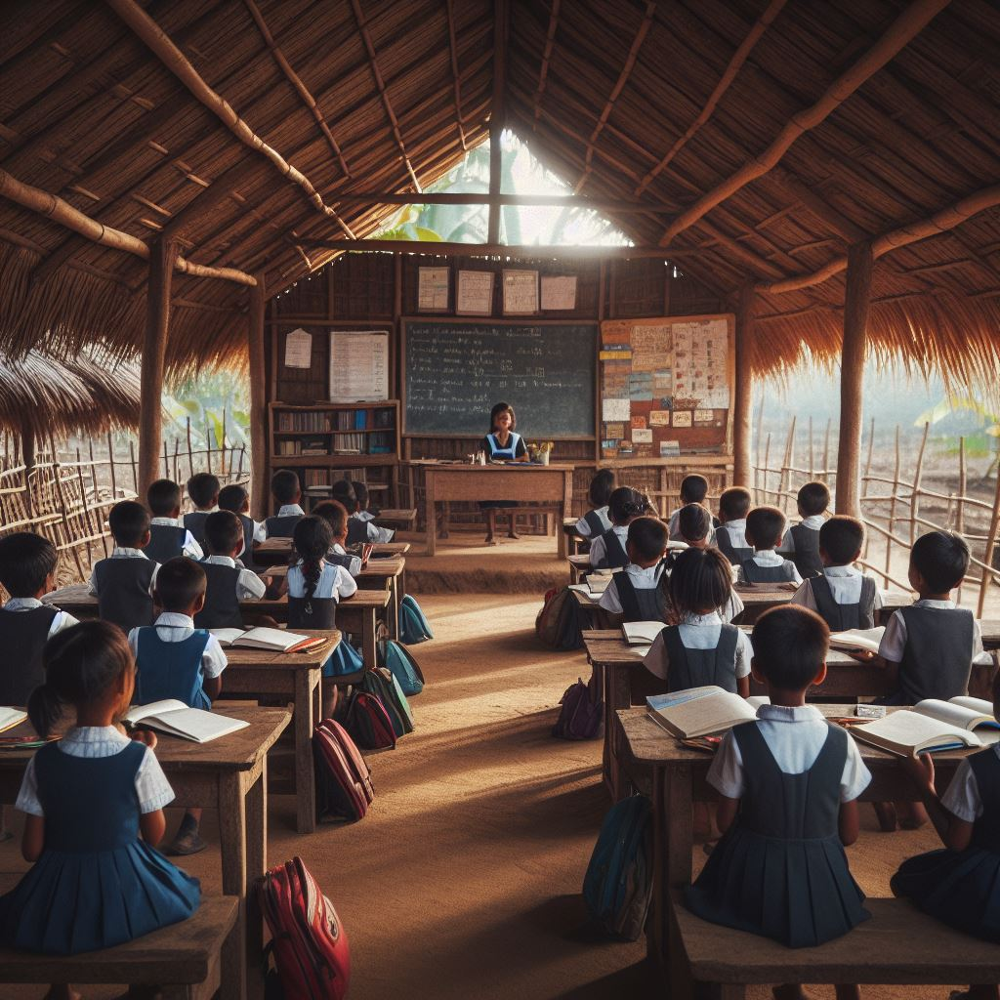

BIENVENIDO A EDUCAFUTURO
En nuestra ONG, estamos comprometidos con una misión ambiciosa y vital: erradicar la pobreza mediante la educación. En un mundo donde la desigualdad persiste, creemos firmemente que la educación es la llave que abre las puertas hacia un futuro más próspero y equitativo.
En EducaFuturo, no solo construimos escuelas, sino que también creamos oportunidades. Nuestro enfoque abarca desde ofrecer becas hasta diseñar programas divertidos y educativos para niños y jóvenes en comunidades con menos recursos. Creemos en el poder transformador de la educación para romper los ciclos de pobreza y abrir nuevos horizontes.
Cada niño y joven merece tener acceso a una educación de calidad, sin importar su origen o circunstancias. Es por eso que trabajamos incansablemente para brindarles las herramientas y el apoyo que necesitan para alcanzar sus sueños y potencialidades.
Únete a nosotros en este viaje hacia un futuro mejor. Juntos, podemos construir un mundo donde la EducaFuturo sea un derecho fundamental para todos. ¡Bienvenidos a EducaFuturo, donde cada paso es un paso hacia el cambio!
CONTENIDOS
Explora nuestra colección de imágenes que capturan la esencia y el impacto de nuestro trabajo. Cada foto cuenta una historia única sobre cómo estamos cambiando vidas a través de la educación. Desde la construcción de escuelas hasta la alegría en los rostros de los niños y jóvenes que participan en nuestros programas, estas imágenes reflejan nuestro compromiso con un futuro mejor. ¡Déjate inspirar por las imágenes que muestran el poder transformador de la educación en acción!
Campañas | Actividades
NOTICIAS DESTACADAS
Campaña de Recaudación de Fondos para la Construcción de Escuelas en Áreas Rurales
Estamos emocionados de compartir con todos ustedes el increíble éxito de nuestra reciente campaña de recaudación de fondos. Juntos, hemos superado todas las expectativas y hemos logrado algo realmente asombroso. Nuestra misión de llevar la educación a comunidades rurales y desfavorecidas ha dado un gran paso adelante. Gracias a su generosidad y apoyo inquebrantable, no solo alcanzamos nuestra meta inicial, ¡sino que la superamos en un 150%!
Gracias a ustedes, no solo construiremos una nueva escuela, sino que tendremos recursos para construir dos escuelas completamente equipadas. Este logro es un testimonio del poder de la solidaridad y la creencia en el cambio positivo. Cada donación, cada acción compartida, cada palabra de aliento ha contribuido a este éxito. Ahora, podemos imaginar a niños y niñas en áreas rurales teniendo acceso a una educación de calidad en entornos seguros y estimulantes.
Estas nuevas escuelas no solo serán lugares de aprendizaje, sino también centros de esperanza y desarrollo para comunidades enteras. Además, crearán oportunidades económicas locales y fomentarán la participación comunitaria en la educación de las futuras generaciones. En nombre de todo el equipo de EducaFuturo, queremos expresar nuestro profundo agradecimiento. Este logro es suyo tanto como nuestro. Juntos, estamos marcando la diferencia y construyendo un futuro más brillante para todos.
Sigamos adelante con esta inspiradora labor. Nuestro compromiso con la educación inclusiva y equitativa nunca ha sido más fuerte. Juntos, podemos hacer realidad nuestra visión de un mundo donde la educación sea un derecho fundamental para todos.